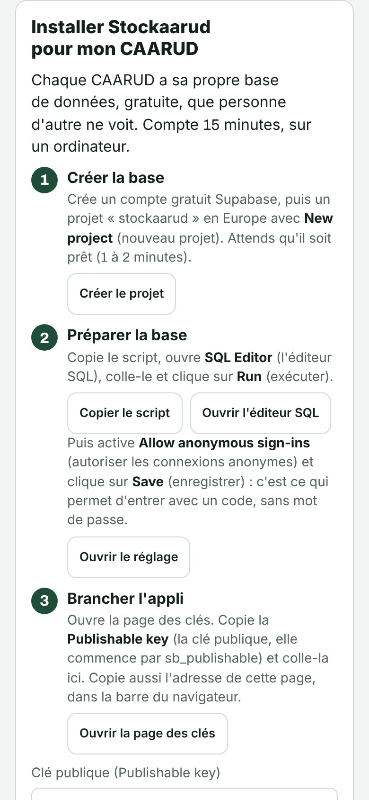
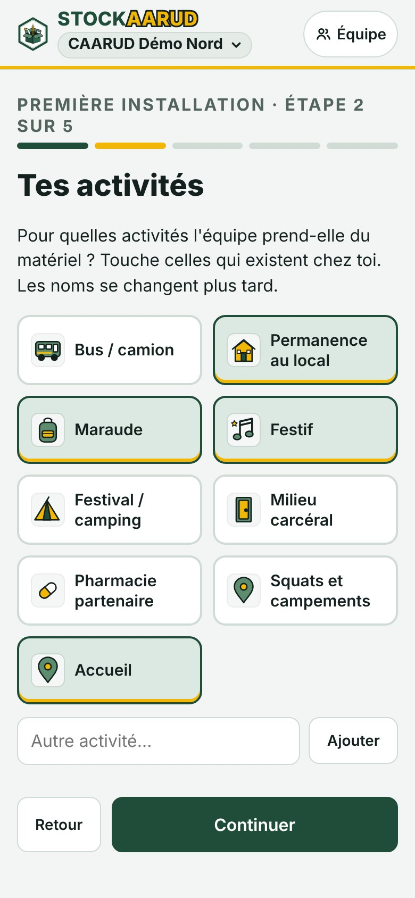

Installer Stockaarud chez vous
Quinze minutes sur un ordinateur, un compte Supabase gratuit, rien à télécharger, aucun mot de passe à retenir.
Il vous faut
- Un ordinateur, le temps de l’installation
- Un compte Supabase gratuit, créé à l’étape 1
- Quinze minutes
-
Créer le projet Supabase
- Créez un compte sur supabase.com.
- New project : nom
stockaarud, région Europe (Paris).
Vidéo de cette étape à venir
-
Installer les tables
Ouvrez l’appli sur l’ordinateur : l’écran Installer Stockaarud pour mon CAARUD a un bouton pour chaque étape.
- Copier le script, puis Ouvrir l’éditeur SQL.
- Collez, cliquez sur Run.
- Notez le code d’installation affiché en bas : il vous fait entrer dans l’appli.

-
Autoriser les connexions par code
Ouvrir le réglage, activez Allow anonymous sign-ins, puis Save.
Ce réglage permet à l’équipe d’entrer avec un QR code, sans compte. C’est le seul à faire à la main.
-
Brancher l’appli sur votre base
Ouvrir la page des clés, copiez la clé anon public (onglet « Legacy API keys »).
Collez-la dans l’appli avec le code d’installation, puis Installer.
Jamais la clé
service_role: elle donne tous les droits.
-
Suivre l’installation guidée
Cinq écrans : votre structure, vos activités, votre matériel, l’inventaire de départ (possible plus tard), puis l’invitation de l’équipe.
Vidéo, 32 s : les cinq écrans de l’installation guidée 
Votre structure 
Vos activités 
Votre matériel -
Inviter l’équipe
L’appli donne un QR code, un lien, un e-mail tout prêt et la fiche équipe en PDF.
L’adresse de votre base voyage dans le lien : les téléphones de l’équipe se branchent sans rien taper.
Vidéo, 12 s : créer le lien et le QR code de l’équipe 
Au quotidien
Noter une sortie en 3 clics
Ce que fait l’équipe, en maraude ou à l’accueil.
Le tableau de bord et les statistiques
Ce que voit le responsable stock.
Une équipe de choc
| Action | Équipe | Responsable stock |
|---|---|---|
| Noter une sortie, un retour, une perte | oui | oui |
| Voir le stock | oui | oui |
| Tableaux de bord, alertes, commandes, statistiques | non | oui |
| Modifier le matériel et les réglages | non | oui |
| Corriger, sauvegarder, tout effacer | non | oui |
Bon à savoir
Hors connexion
Les saisies restent sur le téléphone et partent dès le retour du réseau.
Pause du projet
Supabase met en pause un projet gratuit resté 7 jours sans activité. Cliquez sur Restore project : rien n’est perdu.
Sauvegardes
Supabase gratuit ne garde pas de copie. Téléchargez la sauvegarde après chaque inventaire : l’appli vous le rappelle.
Accès perdu
Dans Supabase, SQL Editor, tapez
select public.code_secours();puis Run : vous obtenez un nouveau code de responsable stock.Mises à jour
Elles arrivent seules : les téléphones prennent la nouvelle version à la prochaine ouverture.